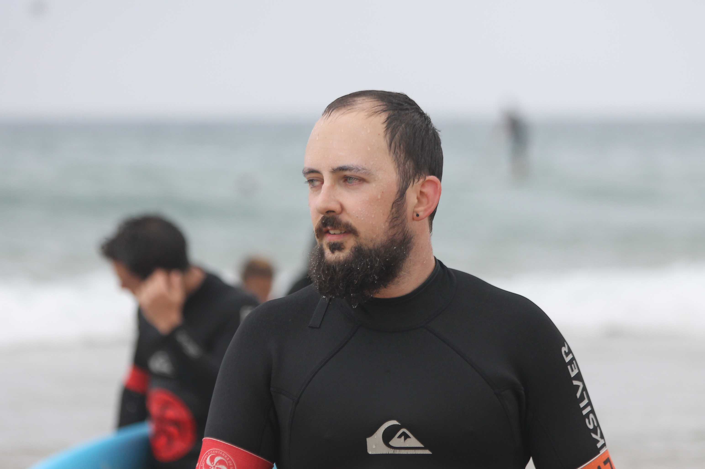

Esto es tan solo un ejemplo de lo grande que puede ser el aprendizaje con 32 años. Para más info, click aquí o aquí.
Érase una vez que se era
Un baterista de Alhama de Murcia que decidió hacer enfermería para acabar aprendiendo programación
Historia de Alhama
El término municipal de Alhama de Murcia ocupa una superficie de 311,55 km², casi en el centro de la Región de Murcia. Está integrado en la comarca de Bajo Guadalentín, y se sitúa a 36 kilómetros de la capital murciana. Se trata de un municipio con intensos cambios en el relieve. En la parte central se dispone el Valle del Guadalentín, que recorre el río de igual nombre, mientras que tanto al norte como al sur se disponen sistemas montañosos. Sierra Espuña ocupa el noroeste del territorio, donde se alcanzan los 1444 metros (pico Morrón), incluyendo parte del Parque Regional de Sierra Espuña. Desde allí, varios barrancos vierten hacia las dos subcuencas de la zona: la del río Pliego y la del río Guadalentín. Al noreste se sitúa la Sierra de La Muela, alcanzando los 633 metros y en cuyas estribaciones se localiza el núcleo urbano de Alhama. Al sur se encuentra la Sierra de Carrascoy, cuya máxima altitud alcanza los 1064 metros (pico Carrascoy), y también define dos subcuencas, la noreste, más escarpada, que drena hacia el río Guadalentín, y la sureste, que vierte hacia el Campo de Cartagena.
Historia de Berlín
Berlín se encuentra al este del río Elba, en lo que fuera la frontera oriental del reino franco oriental. Estas regiones estaban habitadas por tribus eslavas; por esta razón, la mayoría de las ciudades y pueblos en el noreste de la actual Alemania tienen nombres eslavos y la misma región fue llamada Germania Slavica. Los sufijos típicos de los nombres de lugares germanizados de origen eslavo son -ow, -itz, -vitz, -witz, -itzsch e -in. Los prefijos suelen ser Windisch y Wendisch. El nombre de Berlín tiene, por lo tanto, raíces eslavas. Se lo relaciona con las palabras berl o birl, que en polabo significaban "tierra no cultivable" o "tierra deshabitada", respectivamente También se lo deriva de la combinación de berl (en este caso con la posible acepción de pantano) más el mencionado sufijo locativo eslavo -in, que indicaba un lugar; o sea «lugar pantanoso», presunción fortalecida porque generalmente se la nombra con artículo: Der Berlin. La etimología popular alemana lo asocia con el oso del escudo de la ciudad, ya que en alemán Bär, pronunciado [ber], significa oso. A partir de ella se atribuyó su fundación a Alberto, el Oso (Albrecht den Bären). De los doce distritos de Berlín, cinco tienen un nombre parcialmente eslavo: Pankow (el más poblado), Steglitz-Zehlendorf, Marzahn-Hellersdorf, Treptow-Köpenick y Spandau (Spandow hasta 1878)
Historia de Barcelona
El origen del nombre de Barcelona es desconocido y existen diversas teorías y leyendas que intentan explicarlo. Se sabe que había una ciudad ibérica original, de la tribu de los layetanos. Posteriormente fue conquistada por Cneo Cornelio Escipión Calvo, y más adelante fue convertida en una colonia romana, puesta bajo la protección de Cayo Julio César y de Octavio Augusto, que recibió el nombre de Colonia Iulia Augusta Paterna Faventia Barcino. El nombre evolucionó durante la Edad Media, cuando se conoció la ciudad con los nombres de Barchinona, Barcalona, Barchelona y Barchenona.
Listas de Victor
Cosas que le gustan a Víctor
- Elena Vorontsova
- Gatos
Pizza- Mirar las estrellas
Hobbies de Víctor
- Escalada
- Videojuegos
- Aprender programación
- Rompecabezas

Y para más inri, debía cuidar a dos gatos que había decidido adoptar